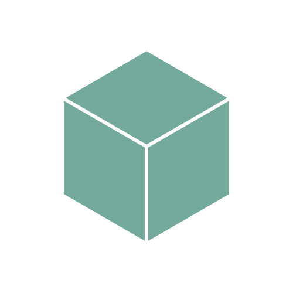

<!DOCTYPE html>
<head>
    <meta charset="utf-8">
    <meta http-equiv="X-UA-Compatible" content="IE=edge">
    <meta name="viewport" content="width=device-width, initial-scale=1">
    <meta name="description" content="CADGPT - your favorite AI CAD tool!">
    <title>CADGPT</title>
    <link rel="icon" href="assets/CADGPTICON.svg"> <!-- GENUINELY designed ts programatically :sob: -->
    <link rel="stylesheet" href="css.css">
    <script src="js/index.js"></script>
    <script src="./node_modules/@jscad/modeling/dist/jscad-modeling.min.js"></script>
    <script type="importmap">
        {
          "imports": {
            "three": "./node_modules/three/build/three.module.js",
            "three/addons/": "./node_modules/three/examples/jsm/"
          }
        }
    </script>
    <script type="module" src="display.js"></script>
</head>
<body>
<div class="viewport" id="viewport"></div>
<div class="typebox" contenteditable="true" txt="Message CADGPT"></div>
    <!--<div contenteditable="false" style="user-select: none;">Message CADGPT</div>-->
<!--Message CADGPT--> <!--testing smth plswork-->
    <!--  lwk dont like it there-->
    <!--NONE of my attempts work js ignore this messy piece here its tuff-->
<!--</div>-->


<!-- OPENSCAD TEST CODE:

include <BOSL2/std.scad>

$fn = 64;

key_size = 3.0;
long_arm = 65;
short_arm = 20;
bend_radius = 6;

hex_profile = hexagon(id=key_size);

l_path = [
    [0, 0, long_arm],
    [0, 0, bend_radius],
    [bend_radius, 0, 0],
    [short_arm, 0, 0]
];

path_sweep(hex_profile, l_path, radius=bend_radius);

-->

</body>